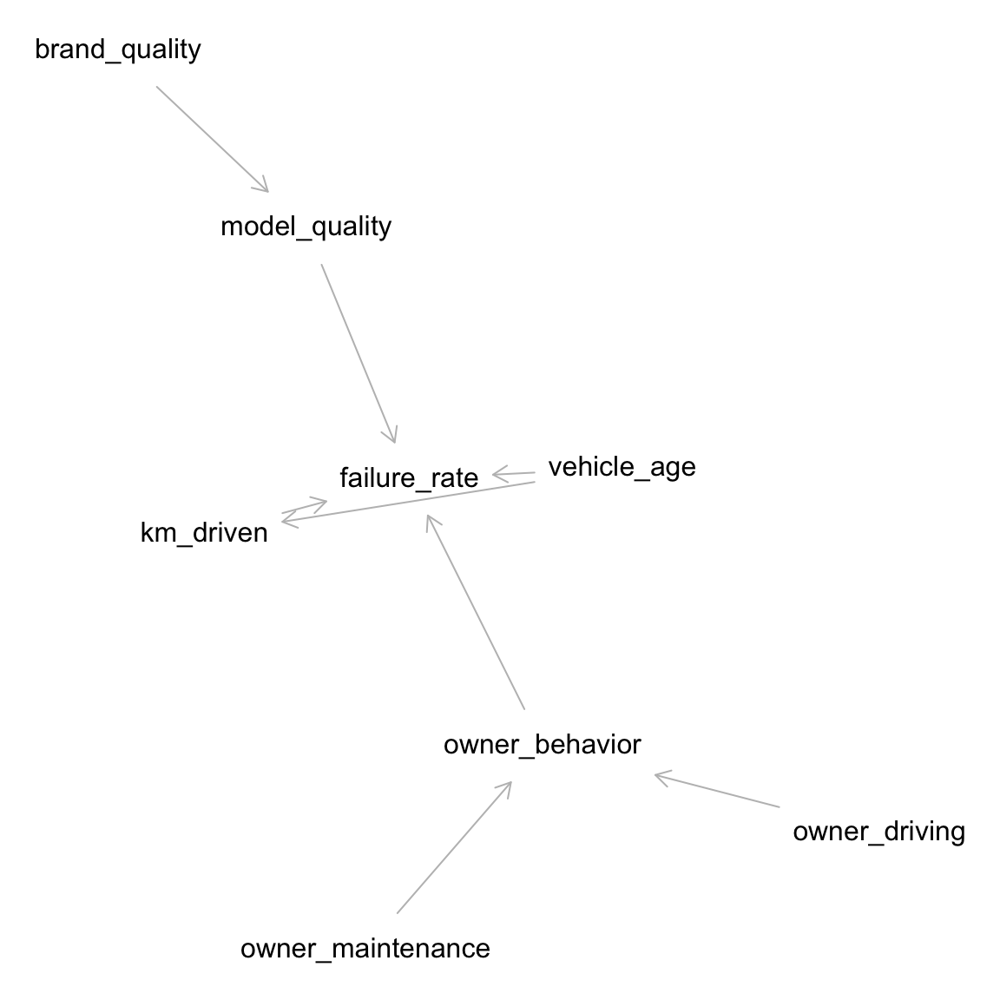

I downloaded three data sets from the Finnish Transport and Communications Agency (FINCOM) Traficom website. In all cases I limited the data to the Finnish mainland, excluding the autonomous region of Åland, because either the data was not included or the island region is so small and experiences different conditions compared to the rest of Finland.
A.1 Data set: Failure rates in 2022 inspection data
The statistics include vehicle models of which at least 100 specimens have been inspected. The reasons for failed inspections include only the faults that have occurred in at least 10 per cent of the model in question or whose share is at least 1 per cent.
A.1.1 About the data
I downloaded the following data on 2023-12-18 (Table 1.1):
Each row of data is for a unique combination of (model_year, model, brand)
inspection_count and failure_rate by model and model_year (in some places I use model_year recoded as vehicle_age)
A mapping between model and brand, which enables brand-level aggregation
Most common reason failure_reason and in some cases second and third most common reason
I used deepl.com to translate column names and descriptive values. I created a “translation” sheet in the modified 2022 source file.
In the modified 2022 data source file I removed “\n” from the source in column and cell values, which removed the need to manually address “\r\n” substrings on the translation sheet. Since I was having difficulty getting it to work in my R script, I did this in LibreOffice (regex find/replace) and used a modified source file which has “cleaned” in the file name.
I assume “year of entry into service” corresponds to model year. This is not true for the small portion of vehicles of model year X that were were sold late in year X-1 or not sold until year X+1. A more significant bias would be introduced if (A) a large number of used cars were imported into Finland and (B) the “year of entry into service” was defined as “year of entry into service in Finland.” I assume (B) is not true.
A.1.2 Causal graph
The causal graph below represents my assumptions about which variables influence failure_rate and other variables. The data set does not include \(owner\_behavior\) or its components \(owner\_maintenance\) and \(owner\_driving\).
Show the code
#|label: fig-causal-graph#|fig-cap: "Causal graph for inspection failure rate"#|fig-height: 6#|fig-width: 6# vehicle_age is a more useful way to express model_yeardag1 <-dagitty("dag { vehicle_age -> km_driven vehicle_age -> failure_rate km_driven -> failure_rate owner_behavior -> failure_rate brand_quality -> model_quality model_quality -> failure_rate owner_maintenance -> owner_behavior owner_driving -> owner_behavior }")exposures(dag1) <-c("brand_quality", "model_quality", "vehicle_age", "km_driven", "owner_driving", "owner_maintenance")outcomes(dag1) <-"failure_rate"latents(dag1) <-"owner_behavior"plot(graphLayout(dag1))

A.1.3 Modeling failure rate and brand/model quality
The failure_rate could be approximated as follows:
\[failure\ rate \sim vehicle\ age + driving\ distance + brand\ quality + model\ quality\ + owner\ behavior\] Given the limited data for individual vehicle models, I use \(brand\ quality\), and as a result, any variation in \(model\ quality\) will show up in \(brand\ quality\).
\[failure\ rate \sim vehicle\ age + driving\ distance + brand\ quality + owner\ behavior\] The predictor \(owner\ behavior\) is composed of (at least) \(owner\ maintenance\ practices\) and \(owner\ driving\ behavior\). Since there is no data for \(owner\ behavior\) (other than distance driven, represented separately), I assume \(owner\ behavior\) is approximately constant, rendering it irrelevant to the models. This is not quite accurate, since it’s more likely that, compared to inexpensive models, expensive models will be garaged in climate-controlled conditions and maintained according to manufactures’ recommendations. Thus any variation caused by \(owner\ behavior\) will show up as part of the variation in \(model\ quality\) or \(brand\ quality\). Thus I removed \(owner\ behavior\) from the regression specs below.
Most interesting is \(brand\ quality\), which is determined pre-purchase. Can I infer something of relative \(brand\ quality\) given we have only the \(failure\ rate\), \(vehicle\ age\), and \(driving\ distance\), the latter in summary statistics (median and mean) without distributions? Yes. See Chapter 3 Modeling failure rate.
Note that it’s likely that information about \(brand\ quality\) and \(model\ quality\) is baked into the ratios of new and used model prices. It would be possible to collect prices for new and used model years and include this in the regression models. I did not do this.
Given the high collinearity amongmodel_year (a.k.a. vehicle_age), median_km_driven, and average_km_driven (Table 1.3), I include only one of these in each model as the predictor. Since median_km_driven is more robust to outliers than average_km_driven, I use the medians.
First I create linear models \[failure\ rate \sim vehicle\ age\] and \[failure\ rate \sim median\ km\ driven\] including all brands for which I have a minimum of 30 rows of data (Table 3.2). \(vehicle\ age\) is a reparameterization of \(model\_year\). Each row is a unique combination (vehicle_age, brand, model).
Then I create these same linear models for each brand, subsetting the data to one brand each time (Figure 3.1).
I selected “Passenger cars in traffic by Area, brand, Year of first registration and Driving power”
A one-day snapshot during which data was collected introduces bias in the sample. Possible confounders include the following:
Weather conditions
Day of the week
Distribution of traffic cameras or other data acquisition endpoints
Accuracy of data acquisition endpoints in reading vehicle details
Model-specific driving characteristics. For example, sports cars that are rarely driven are less likely to be included in the snapshot than vehicles used for commercial purposes
I don’t have insight into these confounders; nor do I try to adjust for them.
A.2.1 About the data
I downloaded the following data on 2023-12-18 (Table 5.1):
Areas include all of Finland and by area (region). I filtere districts to include only the entire Finnish mainland.
Counts are by brand + power train but not model
There is a total count for “passenger vehicles” as well as by brand
There is an “others” category, presumably other brands
There is a “Campervan” category at the end of each area, not broken out by brand (which I removed)
Limited to districts; not going into more detailed municipalities.
Data is in English
Each row of data is a unique combination of brand, power_train, and model_year.
I copied the following from the generated spreadsheet:
The table does not include vehicles in Åland's separate register.
Campervans are separated from brands and summed up.
The table contains 100 most common passenger car brands.
Rarer brands are combined to the category `other` brands.
Area:
Municipality of domicile of vehicles (area)
brand:
brand of the vehicle
Year of first registration:
Vehicles year of first registration
Driving power:
Driving power of the vehicle
Latest update:
20231009 12:00
Source:
Traficom
Contact:
Email: <redacted>@traficom.fi
Copyright
Units:
Number of passenger cars
A.2.2 Data file
Downloaded: kanta_010_20231218-231953.xlsx: 8MB file. I used only the columns of data corresponding to vehicles in model_years 2001+.
I downloaded the data on 2024-01-07, which includes the following (Table 6.1):
brand, model_year, power_train, import_year, and n
For Finnish mainland
Imported 2014-2023
Including model years 2001-2023
For the statistical reference year 2023, the table covers registrations for January to December.
The table does not include vehicles in Åland's separate register.
Make
Make of the vehicle
Year of first registration
Vehicles year of first registration
Driving power
Driving power of the vehicle
Year
Statistical year is the calendar year a set of statistics concerns
A.3.2 Data file
Downloaded: used-vehicle-imports-yksmaah_20240108-022107.xlsx. I used only the columns of data corresponding to vehicles in model_year 2001+.